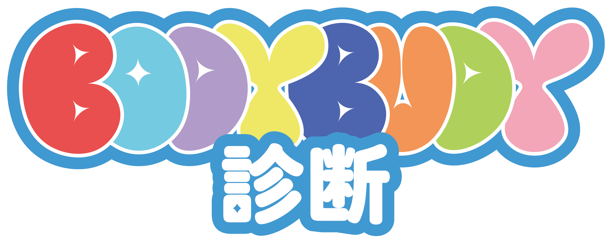
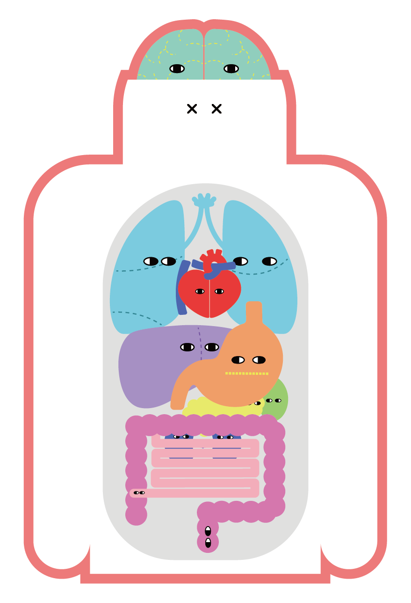

<!DOCTYPE html>
<html lang="ja">
<head>
<meta charset="UTF-8" />
<meta name="viewport" content="width=device-width, initial-scale=1.0">
<title>診断</title>
<script src="https://cdn.jsdelivr.net/npm/html2canvas@1.4.1/dist/html2canvas.min.js"></script>
<style>
body {
  font-family: "Hiragino Kaku Gothic ProN", sans-serif;
  background: #fff7fb;
  margin: 0;
  padding: 0;
  display: flex;
  justify-content: center;
}

#app {
  width: 100%;
  max-width: 500px;
  padding: 20px;
}

.question {
  font-size: 22px;
  margin-bottom: 20px;
}

.choice {
  background: #ffffff;
  border: 2px solid #f3b6d4;
  border-radius: 20px;
  padding: 18px;
  margin: 16px 0;
  cursor: pointer;
  transition: 0.2s;
}

.choice:hover {
  background: #ffe3f0;
}

#backBtn {
  margin-top: 20px;
  background: none;
  border: none;
  color: #888;
  font-size: 14px;
  cursor: pointer;
}

#result {
  text-align: center;
}

#result img {
  width: 80%;
  max-width: 320px;
  margin: 20px auto;
  display: block;
}

#saveBtn {
  background: #f3b6d4;
  border: none;
  border-radius: 30px;
  padding: 12px 20px;
  font-size: 16px;
  cursor: pointer;
}
</style>
</head>

<body>
<div id="app"></div>

<script>
const questions = [
{ q:"Q1. 予定も刺激もない時間が急にできたとき、実際の自分の反応に一番近いのは？",
  a:[
    {t:"頭の中で『この時間をどう使うべきか』を考え続けてしまう", type:"no"},
    {t:"落ち着かず、立ち上がったり何かし始めてしまう", type:"shinzo"},
    {t:"誰かと話したくなり、SNSや通話アプリを開く", type:"ho"},
    {t:"空気や音、自分の感覚をぼんやり味わっている", type:"hai"}
  ]
},
{ q:"Q2. 悩みを相談されたとき、実際に一番起きやすい反応は？",
  a:[
    {t:"感情を受け止めることを最優先にして聞く", type:"i"},
    {t:"解決策や現実的な選択肢を自然と考えている", type:"kanzo"},
    {t:"声色や間から『本音』を読み取ろうとしている", type:"supurin"},
    {t:"感情に飲まれないよう線を引いて聞いている", type:"kido"}
  ]
},
{ q:"Q3. 新しいことに出会ったときの最初の動きは？",
  a:[
    {t:"仕組みや構造を理解してから動きたい", type:"no"},
    {t:"とにかく触って試しながら覚える", type:"sho"},
    {t:"周囲の様子や空気を確認してから動く", type:"kado"},
    {t:"すぐには手を出さず、後から自分のペースで触れる", type:"dai"}
  ]
},
{ q:"Q4. 予定が急に変わったときの反応は？",
  a:[
    {t:"思考が止まり、どう動けばいいか分からなくなる", type:"no"},
    {t:"むしろ刺激として楽しさを感じる", type:"sho"},
    {t:"内側ではかなり消耗している", type:"kurea"},
    {t:"まず状況を整理し直そうとする", type:"kado"}
  ]
},
{ q:"Q5. グループ作業で無意識にやっていることは？",
  a:[
    {t:"全体構造や流れを組み立てている", type:"no"},
    {t:"考える前に体が動いている", type:"shinzo"},
    {t:"目立たない所で不足を埋めている", type:"kanzo"},
    {t:"情報を整理してまとめ役になる", type:"dai"}
  ]
},
{ q:"Q6. 感情が乱れているときに起きやすい状態は？",
  a:[
    {t:"頭の中で考え続けて止まらない", type:"no"},
    {t:"落ち着かず体を動かしてしまう", type:"shinzo"},
    {t:"誰かに話さないと整理できない", type:"ho"},
    {t:"表には出さず内側に溜め込む", type:"i"}
  ]
},
{ q:"Q7. 人間関係で疲れるときに起きがちな状況は？",
  a:[
    {t:"空気を読みすぎて後から反省が止まらない", type:"hai"},
    {t:"断れずに抱え込みすぎる", type:"kanzo"},
    {t:"変化でペースが崩れると極端に疲れる", type:"kurea"},
    {t:"興味やテンポが変わり関係が自然に離れる", type:"sho"}
  ]
},
{ q:"Q8. 周囲から『助かる』と言われやすい行動は？",
  a:[
    {t:"状況を整理して問題点を言語化する", type:"no"},
    {t:"場が止まっているとき動き出す", type:"shinzo"},
    {t:"小さな変化に先に気づく", type:"supurin"},
    {t:"無意識に距離感を調整している", type:"kido"}
  ]
},
{ q:"Q9. 部屋や机の状態で落ち着くのは？",
  a:[
    {t:"整理されていないと集中できない", type:"no"},
    {t:"動線が悪いと強くストレス", type:"shinzo"},
    {t:"物に囲まれている感じが安心", type:"i"},
    {t:"物が少ない方が落ち着く", type:"kido"}
  ]
},
{ q:"Q10. 何かを決めるときの動きは？",
  a:[
    {t:"条件を整理しきらないと決められない", type:"no"},
    {t:"直感で決めて動いてしまう", type:"shinzo"},
    {t:"周囲の反応をかなり見て決める", type:"hai"},
    {t:"決めやすい状態を整えてから決める", type:"kurea"}
  ]
},
{ q:"Q11. 失敗した直後に起きやすい反応は？",
  a:[
    {t:"原因分析が止まらなくなる", type:"no"},
    {t:"次に何をするかに意識が向く", type:"shinzo"},
    {t:"誰かに話しながら整理していく", type:"ho"},
    {t:"内側で長く引きずる", type:"i"}
  ]
},
{ q:"Q12. 複数人の場で無意識にやっている行動は？",
  a:[
    {t:"空気や表情の変化をずっと観察している", type:"supurin"},
    {t:"不要な流れを頭の中で削っている", type:"kido"},
    {t:"場の雰囲気を整えようとしている", type:"kado"},
    {t:"任された部分を淡々と進める", type:"dai"}
  ]
},
{ q:"Q13. 興味のあることに出会ったとき最初にやることは？",
  a:[
    {t:"本や資料を調べる", type:"no"},
    {t:"手を動かして試す", type:"shinzo"},
    {t:"人に話したり意見を聞く", type:"ho"},
    {t:"生活の中に少しずつ入れる", type:"kurea"}
  ]
},
{ q:"Q14. 強く疲れを感じる瞬間は？",
  a:[
    {t:"考えが溜まりすぎて思考が止まらないとき", type:"no"},
    {t:"動けない状況が続くとき", type:"shinzo"},
    {t:"空気が悪い場に長くいるとき", type:"hai"},
    {t:"責任を抱えすぎたとき", type:"kanzo"}
  ]
},
{ q:"Q15. 初対面〜数回会った人から言われやすいのは？",
  a:[
    {t:"冷静そう・何考えてるか気になる", type:"kido"},
    {t:"話しやすい・なんでも聞いてくれそう", type:"i"},
    {t:"元気・一緒にいるとテンポ出る", type:"shinzo"},
    {t:"落ち着く・安心感ある", type:"dai"}
  ]
},
{ q:"Q16. 予定が詰まりすぎたときの反応は？",
  a:[
    {t:"考えすぎて手が止まる", type:"no"},
    {t:"忙しいほどテンションが上がる", type:"sho"},
    {t:"ペースが崩れてかなりしんどい", type:"kurea"},
    {t:"表に出さず処理しきろうとする", type:"kanzo"}
  ]
},
{ q:"Q17. 友人関係で満たされていないとしんどいのは？",
  a:[
    {t:"会話のテンポが合わない", type:"ho"},
    {t:"安心できる空気がない", type:"hai"},
    {t:"距離が近すぎる", type:"kido"},
    {t:"関係が不安定", type:"dai"}
  ]
},
{ q:"Q18. 周囲から『得意だよね』と言われやすいのは？",
  a:[
    {t:"変化や違和感に気づく", type:"supurin"},
    {t:"全体バランスを整える", type:"kado"},
    {t:"新しいことを覚えるのが早い", type:"sho"},
    {t:"コツコツ続ける力がある", type:"kanzo"}
  ]
},
{ q:"Q19. 初対面の場に入った直後にやりがちなことは？",
  a:[
    {t:"人数や関係性を把握する", type:"no"},
    {t:"とりあえず話しかける", type:"ho"},
    {t:"空気やタイミングを探る", type:"hai"},
    {t:"しばらく観察する", type:"supurin"}
  ]
},
{ q:"Q20. 新しいことを覚えるときにしっくりくる方法は？",
  a:[
    {t:"背景や仕組みを調べてから動く", type:"no"},
    {t:"触って試して覚える", type:"sho"},
    {t:"会話しながら理解する", type:"ho"},
    {t:"全体像が見えてから理解できる", type:"dai"}
  ]
},
{ q:"Q21. 後から反省しやすい自分の癖は？",
  a:[
    {t:"考えすぎて動き出しが遅い", type:"no"},
    {t:"勢いで動きすぎる", type:"shinzo"},
    {t:"気を使いすぎて疲れる", type:"hai"},
    {t:"変化への適応に時間がかかる", type:"kurea"}
  ]
},
{ q:"Q22. 困っている人を見たときの反応は？",
  a:[
    {t:"状況整理をして説明する", type:"no"},
    {t:"とりあえず動いて手伝う", type:"shinzo"},
    {t:"気持ちを受け止める", type:"i"},
    {t:"裏で準備して支える", type:"kanzo"}
  ]
},
{ q:"Q23. 自分のコンディションの波に近いのは？",
  a:[
    {t:"日によって気分の波が大きい", type:"hai"},
    {t:"一定のリズムが崩れると調子が狂う", type:"kurea"},
    {t:"刺激がある日の方が元気", type:"sho"},
    {t:"基本的に安定している", type:"dai"}
  ]
},
{ q:"Q24. 長く続きやすい関係性は？",
  a:[
    {t:"思考や価値観を深く共有できる", type:"no"},
    {t:"一緒に体験を共有できる", type:"shinzo"},
    {t:"沈黙が気まずくない", type:"kido"},
    {t:"干渉しすぎない距離が保てる", type:"kado"}
  ]
}
];


const resultText = {
  no: {
    name: "ノータイプ",
    description: `思考が深く、物事を構造で捉えるタイプです。
曖昧な状況でも意味や仕組みを探し続けます。

理解力と洞察力は大きな強みですが、
考えすぎて動き出しが遅くなることがあります。

あなたの「考えている時間」は、
すでに十分に価値のある行為です。`
  },

  shinzo: {
    name: "「シンゾー」タイプ",
    description: `勢いと直感で世界を動かすタイプです。
考える前に体が動き、場にエネルギーを生み出します。

周囲を引っ張る力がありますが、
無理をしすぎると消耗しやすい傾向もあります。

動くことと、休むことのバランスが鍵です。`
  },

  kanzo: {
    name: "「カンゾー」タイプ",
    description: `人知れず全体を支えているタイプです。
目立たないところで負担を引き受け、場を安定させます。

責任感が強く、頼られやすい一方で、
自分の限界を後回しにしがちです。

「抱え込まない選択」も大切にしてください。`
  },

  hai: {
    name: "「ハイ」タイプ",
    description: `空気や感情の流れにとても敏感なタイプです。
言葉にならない違和感を自然と感じ取ります。

共感力が高い分、環境の影響を強く受けやすい傾向があります。

安心できる場所や人が、あなたの土台になります。`
  },

  ho: {
    name: "「ホー」タイプ",
    description: `人との対話の中で思考が深まるタイプです。
話すことで自分の考えや感情を整理していきます。

誰かとのつながりがエネルギー源になる反面、
孤独な時間が続くと消耗しやすくなります。

「話せる相手」を大切にしてください。`
  },

  i: {
    name: "「イ・ムグ」タイプ",
    description: `感情に丁寧に向き合うタイプです。
相手の気持ちを深く受け止める力があります。

優しさが強みですが、
自分の感情を後回しにしすぎることもあります。

まずは自分自身の気持ちにも耳を傾けてください。`
  },

  sho: {
    name: "「ショウ」タイプ",
    description: `体験を通して世界を理解するタイプです。
頭で考えるより、触れて試すことで納得します。

新しい刺激に強く、変化を楽しめますが、
じっとしている時間が苦手な傾向もあります。

動いているとき、あなたは最も自然です。`
  },

  dai: {
    name: "「ダイ」タイプ",
    description: `安定感があり、周囲を落ち着かせるタイプです。
感情や行動の振れ幅が小さく、信頼されやすい存在です。

その分、自分の欲求を後回しにしてしまうこともあります。

「本当はどうしたいか」を意識してみてください。`
  },

  kido: {
    name: "「キド」タイプ",
    description: `距離感の取り方が上手なタイプです。
人との関係を無意識に調整し、摩擦を減らします。

冷静に見られやすいですが、
内側では意外と色々なことを感じています。

無理に近づきすぎない関係性が合っています。`
  },

  kado: {
    name: "「カド」タイプ",
    description: `場のバランスを整えるのが得意なタイプです。
空気や流れを見ながら、全体がうまく回るよう動きます。

自分の意見を後回しにしやすい傾向もあります。

あなたの感覚は、すでに十分に信頼できるものです。`
  },

  supurin: {
    name: "「スプリーン」タイプ",
    description: `微細な変化や違和感に気づくタイプです。
表情、空気、温度感など、言葉にならない情報を拾っています。

観察力が鋭い分、気疲れしやすいこともあります。

「気づいてしまう力」は、あなた独自の才能です。`
  },

  kurea: {
    name: "「クレア」タイプ",
    description: `リズムやペースを大切にするタイプです。
自分の生活感覚が整っているとき、最も安定します。

環境の変化や急な予定変更には弱い傾向があります。

自分のペースを守ることが、何よりも大切です。`
  }
};

const resultColors = {
  no: "#dc64a1",
  shinzo: "#85d0f0",
  kanzo: "#84c255",
  hai: "#e5d22b",
  ho: "#f19ea4",
  i: "#5067af",
  sho: "#7b4e9c",
  dai: "#f5b13c",
  kido: "#78c074",
  kado: "#6cc5c9",
  supurin: "#5d53a1",
  kurea: "#ed7c84"
};


let current = 0;
let history = [];
let score = {};
let started = false;

const app = document.getElementById("app");

function render() {
  app.innerHTML = "";

  if (!started) {
    showStart();
    return;
  }

  if (current >= questions.length) {
    showResult();
    return;
  }

  const q = questions[current];

  const qEl = document.createElement("div");
  qEl.className = "question";
  qEl.textContent = q.q;
  app.appendChild(qEl);

  q.a.forEach(choice => {
    const btn = document.createElement("div");
    btn.className = "choice";
    btn.textContent = choice.t;
    btn.onclick = () => {
      history.push(choice.type);
      score[choice.type] = (score[choice.type] || 0) + 1;
      current++;
      render();
    };
    app.appendChild(btn);
  });

  if (current > 0) {
    const back = document.createElement("button");
    back.id = "backBtn";
    back.textContent = "← もどる";
    back.onclick = () => {
      const prev = history.pop();
      score[prev]--;
      current--;
      render();
    };
    app.appendChild(back);
  }
}

function showStart() {
  const wrap = document.createElement("div");
  wrap.style.textAlign = "center";
  wrap.style.paddingTop = "40px";

  wrap.innerHTML = `
  

  

    <p style="margin:12px 0 18px; color:#666; font-size:14px;">
      からだの中の、あなたらしさを見つける診断
    </p>

    <p style="
      font-size:12px;
      color:#999;
      line-height:1.6;
      margin-bottom:10px;
    ">
      BODY BUDYとは？<br>
      感情や行動のクセから、<br>
      あなたの「内側の個性」を読み解く診断です。
    </p>

    <p style="
      font-size:12px;
      color:#aaa;
      margin-bottom:24px;
    ">
      所要時間：約3分
    </p>

    <button id="startBtn"
      style="
        background:#f3b6d4;
        border:none;
        border-radius:30px;
        padding:14px 28px;
        font-size:16px;
        cursor:pointer;
      ">
      診断をはじめる
    </button>
  `;

  app.appendChild(wrap);

  document.getElementById("startBtn").onclick = () => {
    started = true;
    render();
  };
}


function showResult() {
  const top = Object.keys(score).sort((a,b)=>score[b]-score[a])[0];

  const wrap = document.createElement("div");
  wrap.id = "result"

wrap.style.background = resultColors[top];
  wrap.style.padding = "20px";
  wrap.style.borderRadius = "20px";

　wrap.style.color = "#ffffff";

wrap.innerHTML = `
  <h2>診断結果</h2>
  <h3>${resultText[top].name}</h3>
  
  <p style="white-space: pre-line;">
    ${resultText[top].description}
  </p>
  <button id="restartBtn">最初から</button>
`;


  app.innerHTML = "";
  app.appendChild(wrap);

  // ← ここで初めてボタンがDOMに存在する
  document.getElementById("restartBtn").onclick = () => {
    current = 0;
    history = [];
    score = {};
    started = false;
    render();
  };

  document.getElementById("saveBtn").onclick = () => {
    html2canvas(wrap).then(canvas => {
      const link = document.createElement("a");
      link.download = "result.png";
      link.href = canvas.toDataURL();
      link.click();
    });
  };
}


render();
</script>
</body>
</html>
